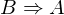
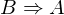
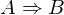

Show the Proof¶
In [1]:
import proveit
# Automation is not needed when only showing a stored proof:
proveit.defaults.automation = False # This will speed things up.
proveit.defaults.inline_pngs = False # Makes files smaller.
%show_proof
Out[1]:
| step type | requirements | statement | ||
|---|---|---|---|---|
| 0 | instantiation | 1, 2, 3 | ⊢ | |
 : , : ,  :  :  | ||||
| 1 | theorem | ⊢  | ||
| proveit.logic.equality.substitute_truth | ||||
| 2 | instantiation | 4, 5, 7 | ⊢ | |
| : , :  | ||||
| 3 | instantiation | 6, 7 | ⊢ | |
 : , : ,  : : | ||||
| 4 | theorem | ⊢  | ||
| proveit.logic.equality.substitute_falsehood | ||||
| 5 | theorem | ⊢  | ||
| proveit.logic.booleans.conjunction.false_and_true_negated | ||||
| 6 | theorem | ⊢  | ||
| proveit.logic.booleans.implication.negated_reflex | ||||
| 7 | assumption | ⊢ | ||